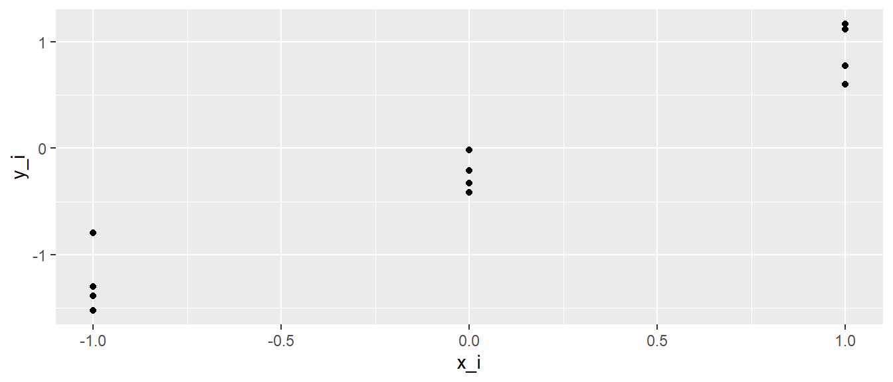
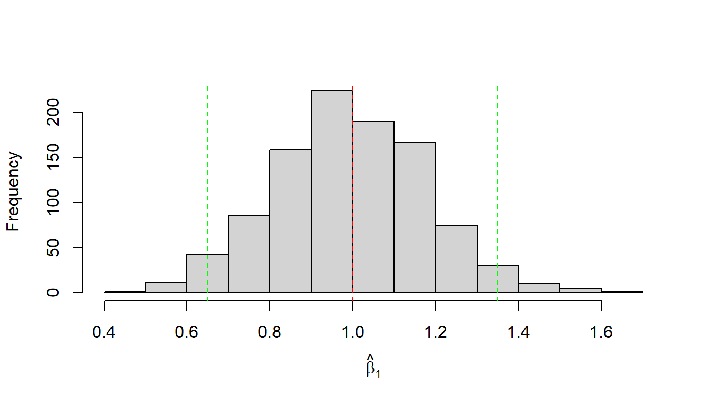

12 Inferenz
Nachdem wir im vorhergehenden Kapitel gelernt haben, wie wir eine Regressionsgerade an einen Datensatz fitten, stellt sich nun die Frage ob die Regressionsgerade tatsächlich einen relevanten Zusammenhang zwischen den beiden Variablen \(x\) und \(y\) beschreibt.
Da das einfache lineare Modelle zwei Parameter \(\beta_0\) und \(\beta_1\) (siehe Formel \(\eqref{eq-slm-psform-beta}\) beinhaltet kann diese Fragestellung auf beide Koeffizienten angewendet werden. D.h. wir können uns fragen ob das Modell einen statistisch signifikanten Zusammenhang zwischen den beiden Variablen beschreibt. Bezogen auf die beiden Parameter, ist der Parameter \(\hat{\beta}_0\) statistisch signifikant und ist der Parameter \(\hat{\beta}_1\) statistisch signifikant? Um unseren Werkzeugsatz zur statistischen Signifikanz anwenden zu können brauchen wir aber erst einmal wieder eine Verteilung bei der wir kritische Bereiche identifizieren können um zu entscheiden ob eine beobachtete Statistik statistisch signifikant ist. Wir behalten dabei immer im Hinterkopf, das statistische Signifikanz nicht das Gleiche ist wie praktische Relevanz bzw. der Beweis einer Abweichung von einer gegebenen statistischen Hypothese.
12.1 Statistische Überprüfung von \(\beta_1\) und \(\beta_0\)
Der erste Schritt um eine Referenzverteilung zu erhalten ist besteht zunächst erst einmal wieder darin, dass wir zunächst einmal eine Zufallsvariable benötigen. Bisher haben wir den Zusammenhang zwischen Variablen über die Formel
\[ y_i = \beta_0 + \beta_1 \cdot x_i \]
beschrieben. In dieser Form ist allerdings noch gar kein zufälliges Element vorhanden. Für ein gegebenes \(x_i\) bekommen wir ein genau ein spezifiziertes \(y_i\). Allerdings hatten wir schon bei der Herleitung gesehen, dass reale Daten in den seltensten Fällen genau auf der Gerade liegen, sondern wir die Parameter \(\hat{\beta}_0\) und \(\hat{beta}_1\) so gewählt haben, dass die quadrierten Abweichungen, die Residuen \(\epsilon_i\) minimal werden. Diese Residuen verwenden wir nun um eine zufälliges Element in unsere Regression rein zu bekommen. Dazu müssen wir den Residuen \(\epsilon_i\) eine Verteilung zuweisen. Wir hatten im Rahmen der vorhergehenden Herleitung zur statistischen Signifikanz auch schon verschiedene theoretische Verteilungen kennengelernt. In diesem Zusammenhang hat sich die Normalverteilung als besonders praktsich erwiesen bzw. als eine Verteilung in in verschiedenen Anwendung eine passable Nährung an reale Daten liefert. Daher gehen im folgenden davon aus, dass die Residuen \(\epsilon_i\) einer Normalverteilung folgen. Intuitive bei der Herleitung der Geradengleichung mittels der Methode der kleinsten Quadrate hatten wir gesehen, dass die Abweichungen in etwa, in Abhängigkeit von der absoluten Abweichung, gleichmäßig oberhalb und unterhalb der Geraden verteilt waren.
In behandelten Weitsprungbeispiel hatten wir informell hergeleitet, dass die Weitsprungleistung von unzähligen Faktoren beeinflusst werden kann, welche dazu führen, dass für eine gegebene Anlaufgeschwindigkeit nicht immer die gleiche Weitsprungweite erzielt wird. Generell, ist diese Art der Begründung bei biologischen System meistens plausibel. In vorhergehenden Abschnitt haben wir dazu aber auch noch gesehen, dass die Normalverteilung eben gut geeignet ist, um solche Prozesse, bei denen viele kleine additive Effekt auftreten. Dieser Argumentation folgend ist es also durchaus plausibel diese Einflüsse auch bei der Regression mittels einer Normalverteilung zu modellieren.
Insgesamt erlaubt uns dies diese Annahme wie folgt mathematisch zu formulieren.
\[\begin{equation} \epsilon_i \sim \mathcal{N}(0, \sigma^2) \label{eq-slm-inf-epsilon-norm} \end{equation}\]
In Formel \(\eqref{eq-slm-inf-epsilon-norm}\) drücken wir aus, dass die Residuen \(\epsilon_i\) also die Abweichungen vom vorhergesagten Wert \(\hat{y}_i\) zum beobachtetgen Wert \(y_i\) einer Normalverteilung folgen mit einem Mittelwert von \(\mu = 0\) und einer noch näher zu spezifizierenden Varianz \(\sigma^2\). Der Mittelwert \(\mu=0\) drückt dabei unsere Erwartung aus, dass im Mittel die Abweichung von der Geraden nach oben und nach unten sich gegenseitig aufheben. Der Skalenparameter \(\sigma^2\) drückt dabei die Streuung der Werte um die Gerade herum aus. D.h. wenn \(\sigma^2\) größer wird, dann streuen die Werte stärker um die Gerade herum bzw. entsprechend entgegengesetzt wenn \(\sigma^2\) kleiner ist.
Insgesamt führt dies zu der folgenden Formulierung des einfachen Regressionsmodells.
\[\begin{equation} Y_i = \beta_0 + \beta_1 \cdot x_i + \epsilon_i, \quad \epsilon_i \sim \mathcal{N}(0, \sigma^2) \label{eq-slm-inf-simple-reg} \end{equation}\]
Bezüglich der Residuen \(\epsilon_i\) lässt sich noch eine weitere Spezifikation machen, auf die wir später noch öfter zurückgreifen werden. Bisher sind wir davon ausgegangen, dass die einzelnen Datenpunkt unabhängig voneinander sind. D.h. jeder einzelne Wert ist nicht beeinflusst durch einen der anderen Werte. In unserem Beispiel waren die Anlaufgeschwindigkeit-Sprungweit-Paare jeweils von unterschiedlichen Athleten. In diesem Fall sind die Kovariancen zwischen den Residuen \(=0\), formale \(cov(e_i,e_j) = 0,~für~i\neq j\). Daher lassen sich die Varianzen und Kovarianzen von \(\epsilon_i\) in Form einer sogenannten Varianz-Kovarianz-Matrize schreiben. Matrizen hatten wir schon in der Einführung zu R kennengelernt. Die Varianz-Kovarianz-Matrize bekommt per Konvention das Zeichen \(\Sigma\) und \(\mathbf{I}_n\) bezeichnet die Einheitsmatrize.
\[\begin{equation*} \Sigma = \begin{pmatrix} \sigma^2 & 0 & \cdots & 0 \\ 0 & \sigma^2 & & \vdots \\ \vdots & & \ddots & \\ 0 & \cdots & & \sigma^2 \end{pmatrix} = \sigma^2 \begin{pmatrix} 1 & 0 & \cdots & 0 \\ 0 & 1 & & \vdots \\ \vdots & & \ddots & \\ 0 & \cdots & & 1 \end{pmatrix} = \sigma^2 \mathbf{I}_n \end{equation*}\]
Die Annahmen des Modells, das ein linearer Zusammenhang zwischen \(Y\) und \(X\) besteht, die einzelnen \(N\) Datenpunkte unabhängig voneinander sind und die Residuen einer multivariaten Normalverteilung mit \(\epsilon \sim \mathcal{N}(0,\sigma^2\mathbf{I}_n)\) folgen werden als Gauss-Markov-Modell bezeichnet.
Definition 12.1 (Gauss-Markov-Modell) Besteht zwischen \(N\) unabhängigen Datenpunkten \((y_i,x_i)\) ein linearer Zusammenhang der Form \(Y = \beta_0 + \beta_1 \cdot X + \epsilon\) zwischen den Variablen \(X\) und \(Y\) und sind die Datenpunkte unabhängigvoneinander und die \(\epsilon\) folgen einer multivariaten Normalverteilung \(\epsilon \sim \mathcal{N}(0, \sigma^2 \mathbf{I}_n)\) dann wird dieses Modell als Gauss-Markov-Modell bezeichnet.
\(Y\) wird jetzt groß geschrieben, da es sich um eine Zufallsvariable handelt. Unter einer multivariaten Normalverteilung können wir uns Verallgemeinerung der uns bekannten Normalverteilung vorstellen. Beispielsweise hat eine zweidimensionale Normalverteilung die Form eines Zuckerhuts. Dieser Teil ist für unsere weitere Betrachtung aber erst einmal nicht von weiterem Interesse. Unserer Formulierung des Regressionsmodells nach Formel \(\eqref{eq-slm-inf-simple-reg}\) führt nun dazu, dass wir das Regressionsmodell in zwei Teile unterscheiden können. Einmal einen deterministischen Teil \(\beta_0 + \beta_1 \cdot x\) und einen stochastischen Teil \(\epsilon_i\). Da \(Y_i\) durch die Addition der beiden Teile berechnet führt, führt dies dazu, dass \(Y_i\) ebenfalls stochastisch ist und somit zu einer Zufallsvariable wird.
Schauen wir uns weiter an, wie sich \(Y_i\) verhält, wenn wir \(X_i\) als Konstante \(X\) mit ein bestimmten Wert annehmen. Dann wird aus Formel\(\eqref{eq-slm-inf-simple-reg}\) \(Y_i = \beta_0 + \beta_i \cdot x + \epsilon_i\). Folglich bleibt der deterministische Teil immer gleich, wird zu einer Konstante. Da \(\epsilon_i\) normalverteilt ist ist \(Y_i\) ebenfalls normalverteilt. Der Mittelwert der Normalverteilung von \(Y_i\) \(\mu_{Y_i}\) ist allerdings nicht gleich Null, sondern die Normalverteilung von \(\epsilon_i\) wird um die Konstante \(\beta_0 + \beta_1 \cdot x\) verschoben (siehe Abbildung 12.1). Das führt dazu, dass \(Y_i\) der Verteilung \(\mathcal{N}(\beta_0 + \beta_1 x)\) folgt.

Daraus folgt jetzt aber zusätzlich, dass für jedes gegebenes \(X\) die \(Y\)-Werte einer Normalverteilung folgen. Lediglich die Verschiebung des Mittelwert der jeweiligen \(Y\)-Normalverteilung hängt von \(X\) über die Formel \(\beta_0 + \beta_1 \cdot X\) zusammen. Formal:
\[ Y|X \sim N(\beta_0+ \beta_1 X,\sigma^2) \]
Die Schreibweise \(|X\) wird übersetzt für gegenbenes \(X\) und sagt aus, dass die Verteilung von \(Y\) von \(X\) abhängt. Es handelt sich dabei um eine bedingte Wahrscheinlichkeit. Die Varianz der jeweiligen \(Y\)-Werte ist dabei die zuvor angenommen Varianz der \(\epsilon_i\) also \(\sigma^2\). Eine wichtige Annahme die noch mal betont werden sollte, wir gehen davon aus, dass die einzelnen Punkte unabhängig voneinander sind. Im Weitsprungbeispiel würde dies bedeuten, dass jeder Sprung von einem anderen Athleten kommen muss.
Wenn wir die Verteilungen von \(Y\) graphisch führ beispielweise drei verschiedene \(X\)-Wert darstellen, dann folgt daraus die folgende Abbildung (siehe Abbildung 12.2). D.h. für jeden \(X\)-Wert werden mehrere \(Y\)-Werte beobachtet, die jeweils einer Normalverteilung folgen.
In Abbildung 12.2 ist klar zu sehen, wie für jeden der drei Punkte von \(X\) die beobachteten \(Y\)-Werte einer Normalverteilung folgen. Die Streuung der Verteilung ist an jedem der \(X\)-Punkte gleich, nämlich \(=\sigma^2\). Dagegen ist der Mittelwert der Verteilung der \(Y_i\)-Wert der Gleichung \(\beta_0 + \beta_1 X\) folgend entlang der Regressionsgerade verschoben.
Wenn wir uns zurück an die Ausführungen zur statistischen Signifikanz erinnern, dann haben wir in dem Zusammenhang vom einem datengenerierenden Prozess gesprochen (Definition 7.1) (DGP). In unserem jetzigen Modell können wir dementsprechend zwei Komponenten als Teile des DGP identizifieren. Entsprechend Formel\(\eqref{eq-slm-inf-simple-reg}\) besteht der DGP aus dem deterministischen Teil \(\beta_0 + \beta_1 X\) und dem stochastischen Teil \(\epsilon_i \sim \mathcal{N}(0,\sigma^2)\). Diese Einsicht können wir verwenden um die Eigenschaften dieses Modells zu möglichen Aussagen hinsichtlich statistisches Signifikanz zu untersuchen.
Wir fokussieren uns jetzt auf ein vereinfachtes Modell bei dem wir zusätzlich noch \(\beta_0 = 0\) setzen, und wir uns erst mal nur für die Eigenschaften von \(\beta_1\) interessieren. Gehen wir nun davon aus, dass zwischen \(X\) und \(Y\) der Zusammenhang \(\beta_1 = 1\) besteht. D.h. wenn \(X\) um eine Einheit vergrößert wird, dann wird \(Y\) ebenfalls um eine Einheit größer.
\[ Y = 0 + 1 \cdot X + \epsilon, \quad \epsilon\sim\mathcal{N}(0,\sigma^2) \tag{12.1}\]
Jetzt müssen wir noch einen Wert für \(\sigma^2\) festlegen. Sei dieser einfach einmal \(\sigma = \frac{1}{2}\). Jetzt können wir R benutzen um Experimente, also Beobachtungen, anhand dieses DGP zu simulieren. Der Einfachheit halber legen wir ein übersichtliches \(N = 12\) fest und nehmen uns jeweils drei \(X\)-Werte z.B. mit \(X \in \{-1, 0, 1\}\), d.h. wir ziehen für jeden \(X\)-Wert vier \(Y\)-Werte.
N <- 12
beta_0 <- 0
beta_1 <- 1
sigma <- 1/2
dat_sim_1 <- tibble(
x_i = rep(-1:1, each=4),
y_i = beta_0 + beta_1 * x_i + rnorm(N, mean = 0, sd = sigma)
)Wenn wir uns die generierten Daten anschauen, dann sehen wir wenig überraschend 12 verschiedene Werte für \(y_i\) und jeweils \(3 \times 4\) verschiedene Werte für \(x_i\) (siehe Tabelle 12.1).
| x_i | y_i |
|---|---|
| -1 | -1.00 |
| -1 | -0.59 |
| -1 | -0.96 |
| -1 | -1.23 |
| 0 | 0.40 |
| 0 | -0.31 |
| 0 | 0.79 |
| 0 | 0.14 |
| 1 | 0.18 |
| 1 | 1.27 |
| 1 | 0.71 |
| 1 | 0.83 |
Wenn wir die Daten graphisch darstellen erhalten wir (Abbildung 12.3):
ggplot(dat_sim_1, aes(x_i, y_i)) +
geom_point()
Ebenfalls wenig überraschend, die Punkte sind auf den \(x\)-Werten \(-1, 0\) und \(1\) zentriert und liegen nicht alle aufeinander, da sie einer Zufallsstichprobe aus \(\mathcal{N}(0, \frac{1}{4})\) entspringen.
Jetzt können für diese Daten unsere Normalengleichungen anwenden und Werte für \(\hat{\beta}_0\) und \(\hat{\beta}_1\) berechnen. Oder wir lassen das von R machen.
mod_sim_1 <- lm(y_i ~ x_i, dat_sim_1)
coef(mod_sim_1)(Intercept) x_i
0.01928823 0.84742748 Wir sehen, dass die berechneten Werte für \(\beta_0\) und \(\beta_1\) schon in der Nähe der tatsächlichen Werte liegen (siehe ?eq-slm-inf-mod-1), aber auf Grund der Stichprobenvariabilität eben nicht genau auf diesen Werten. Was passiert denn jetzt, wenn ich das Ganze noch einmal durchlaufen lassen?
dat_sim_2 <- tibble(
x_i = rep(-1:1, each=4),
y_i = beta_0 + beta_1 * x_i + rnorm(N, mean = 0, sd = sigma)
)
mod_sim_2 <- lm(y_i ~ x_i, dat_sim_2)
coef(mod_sim_2)(Intercept) x_i
0.06918968 1.03838734 Wieder wenig überraschend, da jedes Mal wenn ich rnom() eine neue Ziehung aus der Normalverteilung generiert wird, erhalte ich neue Werte für \(y_i\) und dementsprechend andere Werte für \(\hat{\beta}_0\) und \(\hat{\beta}_1\). Nochmal, warum? Stichprobenvariabilität! Jetzt sind wir wieder bei dem gleichen Prinzip, das wir im Rahmen der kleinen Welt ausgiebig behandelt haben. Schauen wir uns jetzt doch einfach mal was passiert wenn wir die Simulation nicht \(2\times\) sondern z.B. \(1000\times\) durchführen.
N_sim <- 1000
beta_1_s <- numeric(N_sim)
x_i <- rep(-1:1, each=4)
for (i in 1:N_sim) {
daten_temporaer <- tibble(x_i,
y_i = beta_0 + beta_1 * x_i + rnorm(N, mean = 0, sd = sigma))
model_temporaer <- lm(y_i ~ x_i, daten_temporaer)
beta_1_s[i] <- coef(model_temporaer)[2]
}Wir erhalten jetzt einen Vektor beta_1_s mit \(1000\) beobachteten \(\hat{\beta}_1\). Da das etwas viele Werte sind um die uns einzeln anzuschauen, erstellen ein Histogramm der \(\hat{\beta}_1\)s. (Abbildung 12.4).
hist(beta_1_s, xlab = expression(hat(beta)[1]), main='')
abline(v = beta_1, col='red', lty=2)
In Abbildung 12.4 begegnet uns zunächst einmal wieder unsere altbekannte Glockenkurve. Schön ist, dass deren Mittelwert im Bereich des wahren Werts von \(\beta_1\) liegt und Werte mit größer werdender Abweichung vom wahren Wert in ihrer Häufigkeit abnehmen. Aber die Häufigkeit ist nicht Null, sondern eben nur geringer. Werte in der Nähe von \(\beta_1\) weisen dagegen eine größere Häufigkeit aufweisen. Das sollte uns jetzt auch irgendwie zufrieden stimmen, denn dies bedeutet, dass wir in der Lage sind mit unserem Regressionsmodell im Mittel tatsächlich den korrekten Wert abzuschätzen. Allerdings, wie immer, bei einer einzelnen Durchführung des Experiments können wir alles von perfekt spot-on bis komplett danebenliegen und würden es nicht wissen.
Wir können jetzt aber auch wieder ganz parallel zu unseren Herleitungen in der kleinen Welt einen Entscheidungsprozess spezifizieren. Wenn Abbildung 12.4 den DGP beschreibt und das die Verteilung der zu erwartenden \(\hat{\beta}_1\) unter dem Modell sind. Bei der Dürchführung eines neuen Experiments, dann würden wir sagen, dass wenn unserer beobachteter Wert in den Rändern der Verteilung von Abbildung 12.4 liegt, das wir eher nicht davon ausgehen, dass unserer neues Experiment den gleichen DGP zugrundeliegen hat. D.h wir definieren uns jetzt Grenzen am oberen und am unteren Rand der Verteilung. Wenn jetzt ein neuer beobachteter Wert entweder unterhalb der unteren Grenze oder oberhalb der oberen Grenze liegt, dann sagen wir: Wir sind jetzt aber sehr überrascht diesen Wert zu sehen, wenn der dem gleichen datengenerierenden Prozess entstammen soll. Daher glauben wir nicht, dass dieses Experiment den gleichen DGP besitzt.
Um diese Entscheidung treffen zu können, müssen wir also Grenzen definieren. Dazu können wir zunächst einmal einfach die Quantilen der Verteilung nehmen und schneiden z.B. unten \(2.5\%\) und oben \(2.5\%\) ab. So kommen wir dann insgesamt auf \(5\%\), um auf die übliche Irrtumswahrscheinlichkeit von \(\alpha = 0.05\) zu kommen. Dazu benutzen wir R und zwar quantile()-Funktion^[Im folgenden Snippet werden die Werte auf zwei Kommastellen mit round() der besseren Darstellung wegen gerundet).
2.5% 97.5%
0.65 1.35 Mittels dieser Werte können wir zwei disjunkte Wertmenge definieren, einmal die Werte innerhalb von \(\hat{\beta}_1 \in [0.65,1.35]\) bei denen wir nicht überrascht sind, und die unter der Annahme \(\beta_1 = 1\) erwartbar sind und die Werte \(\hat{\beta}_1 \notin [0.65,1.35]\) diejenigen Werte die uns überraschen würden unter der Annahme. Ins Histogramm übertragen (siehe Abbildung 12.5).

Führen wir nun ein Experiment noch einmal durch. Wir beobachten einen Wert für \(\hat{\beta}_1\) von \(1.46\). Dieser Wert liegt außerhalb unseres definierten Intervalls \([0.65, 1.35]\), daher sehen wir diesen Wert als derart unwahrscheinlich unter dem angenommenen DGP, das wir sagen: Wir glauben nicht, dass diesem Experiment nicht der angenommene DGP zugrunde liegt. Graphisch wieder dargestellt (siehe Abbildung 12.6).

Daher würden wir diesen Wert als statisisch signifikant bezeichnen und würden unsere Annahme ablehnen.
Jetzt sind wir aber etwas hin und her zwischen Experiment, Annahmen und Schlussfolgerungen gesprungen. Normalerweise kennen wir die Stichprobenverteilung nicht vor dem Experiment, sondern, wir sind am dem Wert \(\beta_1\) interessiert. Wenn wir den Wert schon wissen würden, dann müssten wir ja gar kein Experiment mehr durchführen. D.h. wir haben eigentlich noch keinen klaren Vorkenntnisse. Mit welcher Annahme gehen wir dann in das Experiment rein? Nun, wir schon bei kleinen Welt Beispiel, starten wir mit der Annahme das zwischen den beiden Variablen kein Zusammenhang besteht. Übertragen auf die Modellparameter also, dass kein linearer Zusammenhang zwischen den beiden Variablen besteht.
\[\begin{align*} H_0: \beta_1 &= 0 \\ H_1: \beta_1 &\neq 0 \end{align*}\]
Um die Stichprobenverteilung unter der \(H_0\) formal Herleitung zu können, ist der Erwartungswert von \(\hat{\beta}_1\) und dessen Standardfehler notwendig. Es lässt sich zeigen, dass die folgenden Zusammenhänge unter den gesetzten Annahmen bestehen:
\[ E[\hat{\beta}_0] = \beta_0 \]
Also der Schätzer von \(\beta_1\) ist erwartungstreu (biased) und der Standardfehler des Schätzer lässt sich wie folgt bestimmen.
\[ \sigma_{\beta_1} = \sqrt{\frac{\sigma^2}{\sum{(X_i - \bar{X})^2}}} \tag{12.2}\]
Hier taucht jetzt zum ersten Mal der Parameter \(\sigma^2\) formal auf. Wo kommt diese Variance her? Sie gehört zu unserer Annahme der Verteilung der \(\epsilon_i \sim \mathcal{N}(0,\sigma^2)\). Bisher haben wir aber noch gar keine Möglichkeit kennen gelerntm, diese abzuschätzen. Wieder nach etwas motivierten Starren auf die verschiedenen Formeln, könnte heuristisch plausibel sein, dass die Varianz, also die Streuung der \(\epsilon_i\) mit der Streuung unserer Werte um die Regressionsgerade zusammenhängen könnten. Formal hatten wir diese als Residuen bezeichnet und mit \(e_i = \hat{y}_i - y_i\) bezeichnet. Vormals hatten wir diese Abweichungen als Fehler bezeichnet, aber unter den jetzt eingeführten Annahmen, handelt es sich nicht wirklich um Fehler, sondern die Abweichungen sind eine Folge davon, dass \(Y_i\) für jeden Wert von \(X_i\) nicht nur einen einzigen Wert hat, sondern eben einer Verteilung folgt \(Y_i|X_i \sim \mathcal{N}(\beta_0 + beta_1, \sigma^2)\) deren Form über die \(\epsilon_i\) bestimmt wird.
Die \(e_i\) sind tatsächlich die Schätzer für die wahren \(\epsilon_i\) also \(e_i = \hat{\epsilon_i} = \hat{y}_i - y_i\). Es lässt sich nun wieder zeigen, dass mittels dieser \(e_i\) ein erwartungstreuer Schätzer für \(\sigma^2\) erzeugen lässt. Nämlich die mittleren quadrierten Abweichungen (MSE).
\[ \hat{\sigma} = \frac{\sqrt{\sum_{i=1}^N e_i^2}}{N-2} = \frac{\text{SSE}}{N-2} = \text{MSE} \tag{12.3}\]
Da das später immer wieder auftauchen wird, hier auch noch mal in die zwei Komponenten zerlegt. Der Zähler wird als Summe der quadrierten Abweichungen (SSE) bezeichnet und durch den Term \(N-2\), der als Freiheitsgerade bezeichnet wird, geteilt. Dann mit die Formel und deren Bezeichnung mittlere Abweichung zusammenpasst, wäre es schöner wenn die Summe durch die Anzahl \(N\) der Terme geteilt wird, allerdings verhält sich das in diesem Fall ähnlich wie bei der Varianz einer Stichprobe wo die Summe auch durch \(N-1\) geteilt wird (zur Erinnerung \(s = \frac{\sum_{i=1}^N (x_i - \bar{x})^2}{N-1}\)). Jetzt wird dementsprechend nicht durch \(N-1\) sondern durch \(N-2\) geteilt.
Für unser Problem der Stichprobenverteilung ist jetzt aber wichtiger, dass wir mittels Gleichung 12.3 den Standardfehler von \(\hat{\beta}_1\) bestimmen können, indem wir für \(\sigma^2\) das mittels der Daten ermittelte \(\hat{\sigma}^2\) einsetzen.
\[ \hat{\sigma}_{\beta_1} = \sqrt{\frac{\hat{\sigma}^2}{\sum{(X_i - \bar{X})^2}}} \tag{12.4}\]
Dies erlaubt uns jetzt nach unserem bereits bekannten Muster eine Teststatistik für die \(H_0\) herzuleiten:
\[ t = \frac{\hat{\beta}_1 - \beta_1}{\hat{\sigma}_{\beta_1}} \]
Unter der \(H_0\) mit \(\beta_1 = 0\) wird daraus
\[ t = \frac{\hat{\beta}_1}{\hat{\sigma}_{\beta_1}} \tag{12.5}\]
Diese Teststatistik folgt einer t-Verteilung mit \(N-2\) Freiheitsgeraden. Da diese Formel wieder etwas aus der Luft gegriffen erscheint, hier noch mal eine Simulation zusammen mit der theoretischen Testverteilung.
N <- 45
n_sim <- 1000
x <- runif(N, -1, 1)
sigma <- 1
experiment <- function() {
y <- rnorm(N, mean = 0, sd = sigma)
mod <- lm(y~x)
b <- coef(mod)[2]
c(beta_0 = coef(mod)[1],
beta_1 = coef(mod)[2],
sigma = sigma(mod))
}
betas <- t(replicate(n_sim, experiment()))
betas <- tibble(beta_0 = betas[,1],
beta_1 = betas[,2],
sigma = betas[,3]) |>
mutate(
s_e_beta_1 = sqrt(sigma**2/sum( (x - mean(x))**2)),
t = beta_1 / s_e_beta_1)
t_theoretical <- tibble(
t = seq(-3, 3, length.out = 150),
p = dt(t, N - 2)
)
ggplot(betas, aes(t)) +
geom_histogram(aes(y = ..density..), bins = 20) +
geom_line(data = t_theoretical, aes(t, p), color = 'red') +
labs(x = "t", y = 'Relative Häufigkeit') In Abbildung 12.7 können wir sehen, dass die theoretische Verteilung in rot die beobachtete Verteilung sehr gut abschätzt.
In R kann der Wert \(\hat{\sigma}^2\) über die Funktion sigma() aus dem gefitteten lm()-Modell extrahiert werden.
sigma(mod)[1] 0.2369055Schauen wir uns die Stichprobenverteilung von \(\hat{\sigma}^2\) anhand unserer Simulation an. Es ist wieder zu beobachten, das im Mittel der korrekte, im Modell definierte, Wert von \(\sigma = 1\) beobachtet wird (siehe Abbildung 12.8).
Aber wie immer, leider steht uns bei einem realen Experiment diese Information nicht zur Verfügung und wir haben nur einen einzelnen Wert, der alles von komplett daneben bis ziemlich perfekt sein kann.
Schauen wir uns noch einmal die Ausgabe zu unserem Weitsprungmodell mittels summary() an. Unter Residual Standard Error sehen wir, dass hier \(\hat{\sigma}\) angegeben wird. Dieser Wert wird auch als mittlerer Schätzfehler bezeichnet und kann als Maß verwendet werden, welche Abweichung das Modell im Mittel hat. Die Einheit sind wieder in den Einheiten der abhängigen Variable, so kann auch schon abgeschätzt werden mit welcher Präzision das Modell die Daten fittet.
summary(mod)
Call:
lm(formula = jump_m ~ v_ms, data = jump)
Residuals:
Min 1Q Median 3Q Max
-0.44314 -0.22564 0.02678 0.19638 0.42148
Coefficients:
Estimate Std. Error t value Pr(>|t|)
(Intercept) -0.13854 0.23261 -0.596 0.555
v_ms 0.76110 0.02479 30.702 <2e-16 ***
---
Signif. codes: 0 '***' 0.001 '**' 0.01 '*' 0.05 '.' 0.1 ' ' 1
Residual standard error: 0.2369 on 43 degrees of freedom
Multiple R-squared: 0.9564, Adjusted R-squared: 0.9554
F-statistic: 942.6 on 1 and 43 DF, p-value: < 2.2e-16In unserem Fall beobachten wir \(0.24m\). Diesen Wert muss jetzt unsere Trainerin im Sinne der Weitsprungleistung der deren Varianz interpretieren und ein Abschätzung treffen zu können.
Nach der Herleitung der Teststatistik für \(\beta_1\), können wir jetzt auch weitere Teil der Ausgabe von summary() interpretieren. In der Tabelle stehen entsprechend die Standardfehler für \(\hat{\beta}_1\) und \(\hat{\beta}_0\). Für \(\beta_0\) wird genau die gleiche Vorgehensweise wie auch bei \(\beta_1\) angewendet. Die Nullhypothese \(H_0\) ist hier ebenfalls das der Parameter standardmäßig als Null angesetzt wird. Der Standardfehler von \(\beta_0\) errechnet sich nach:
\[\begin{equation} \sigma^2[\beta_0] = \sigma^2\left(\frac{1}{n} + \frac{\bar{x}^2}{\sum_{i=1}^n (x_i - \bar{x})^2}\right) \label{eq-slm-inf-beta0-se} \end{equation}\]
An Formel \(\eqref{eq-slm-inf-beta-0-se}\) ist zu erkennen, dass wenn die \(X\)-Werte den Mittelwert \(0\) haben, dass \(\sigma^2[\beta_0]\) gleich dem Standardfehler für den Mittelwert SEM wird. Was auch wiederum Sinn macht, da in diesem Fall \(\beta_0 = \bar{y}\) gilt.
Dies führt dies zu den beiden zu überprüfenden Hypothesen für \(\beta_0\):
\[\begin{align*} H_0: \beta_0 &= 0 \\ H_1: \beta_0 &\neq 0 \end{align*}\]
Dementsprechend überprüft die Hypothesentestung ob der \(y\)-Achsenabschnitt gleich Null ist. Hier sollte berücksichtigt werden, dass diese Hypothese in den seltensten Fällen tatsächlich auch von Interesse ist und lediglich besagt, dass entweder der \(y\)-Achsenabschnitt durch den Nullpunkt geht, oder dass wenn tatsächlich \(\beta_1 = 0\) gilt, der Mittelwert von \(y\) gleich Null ist, was ebenfalls in den seltensten Fällen von Interesse ist.
Die Spalten 3 und 4 in summary() unter Coefficients: können jetzt interpretiert werden, da es sich hierbei um die \(t\)-Teststatistik handelt und den entsprechenden p-Wert unter der jeweiligen \(H_0\). Die Hypothesen sind ungerichtet.
12.2 Herleitung der Eigenschaften von \(\hat{\beta}_1\)
Um den Schätzer \(\hat{\beta}_1\) für \(\beta_1\) formal herzuleiten. Beginnen wir zunächst mit der folgenden Formel, wobei wir im folgenden den Schätzer mit \(b_1\) bezeichnen.
\[ b_1 = \sum k_i Y_i \tag{12.6}\]
D.h. wir zeigen zunächst, dass \(b_1\) durch eine lineare Kombination der \(Y_i\)-Werte berechnet werden kann. Die Koeffizienten \(k_i\) der Summe sind dabei wie folgt definiert:
\[ k_i = \frac{X_i - \bar{X}}{\sum(X_i - \bar{X})^2} \tag{12.7}\]
Der Grund für diese zunächst etwas uneinsichtige Definition wird im Weiteren klarer werden. Zunächst haben die \(k_i\) verschieldene Eigenschaften die wir uns später zunutze machen wollen. Zunächst erst einmal noch ein paar Identitäten die wir später auch noch verwenden.
Die erste Identität bezieht sich auf das Kreuzprodukt der Abweichungen von \(X_i\) und \(Y_i\) von ihren jeweiligen Mittelwerten.
\[\begin{align*} \sum(X_i-\bar{X})(Y_i-\bar{Y}) &= \sum(X_i - \bar{X})Y_i -\underbrace{\sum(X_i - \bar{X})}_{=0}\bar{Y} \\ &= \sum(X_i - \bar{X})Y_i \end{align*}\]
Wenn wir in der Formel \((Y_i-\bar{Y})\) durch \((X_i-\bar{X})\) austauschen, folgt noch eine weitere nützliche Identität:
\[ \sum(X_i-\bar{X})^2 = \sum(X_i - \bar{X})X_i \]
Werden die jeweiligen \(k_i\) mit den dazugehörigen \(X_i\) multipliziert und die Definition der \(k_i\) (siehe Gleichung 12.7) beachten, erhalten wir:
\[ \sum k_i X_i = \frac{\sum(X_i - \bar{X})X_i}{\sum(X_i-\bar{X})^2} = \frac{\sum(X_i-\bar{X})^2}{\sum(X_i-\bar{X})^2} = 1 \]
D.h. Die Summe der \(k_i X_i\) ist gleich \(1\). Aus der Definition Gleichung 12.7 folgt weiterhin.
\[ \sum k_i = \sum \left(\frac{X_i-\bar{X}}{\sum(X_i-\bar{X})^2}\right)= \frac{\sum(X_i-\bar{X})}{\sum(X_i-\bar{X})^2} = \frac{0}{\sum(X_i-\bar{X})^2} = 0 \]
D.h. die Summe der \(k_i\) ist gleich Null.
Wenn wir jetzt wieder die Definition unseres Schätzer für \(\beta_1\) verwenden (siehe ?eq-slm-basics-norm1). Dann erhalten unter der Verwendung der Identität der Kreuzprodukte den gewünschten Zusammenhang zwischen \(b_1\) und \(Y_i\).
\[\begin{align*} b_1 &= \frac{\sum(X_i - \bar{X})(Y_i - \bar{Y})}{\sum(X_i - \bar{X})^2} \\ &= \frac{\sum(X_i - \bar{X})Y_i}{\sum(X_i - \bar{X})^2} = \sum k_i Y_i\\ \end{align*}\]
Wenden wir jetzt den Erwartungswert auf \(Y_i\) an, dann werden die \(k_i\) als konstant angesehen und nur die \(Y_i\) sind Zufallsvariablen. Da aber \(Y_i = \beta_0 + \beta_1 X_i + \epsilon_i\) gilt und in dieser Formel wiederum nur \(\epsilon_i\) eine Zufallsvariable mit \(\beta_0\) und \(\beta_1 X_i\) konstant ist und zudem die \(\epsilon \sim \mathcal{N}(0,\sigma^2)\) also \(E[\epsilon_i] = 0\) laut der Annahme gilt, folgt:
\[\begin{align*} E[b_1] &= E\left[\sum k_i Y_i\right] = \sum k_i E[Y_i] = \sum k_i (\beta_0 + \beta_1 X_i) \\ &= \beta_0 \sum k_i + \beta_1 \sum k_i X_i = \beta_1 \end{align*}\]
D.h. ?eq-slm-basics-norm1 ist ein erwartungstreuer Schätzer für \(\beta_1\). Das gleiche gilt auch für den Schätzer \(b_0\) für \(\beta_0\).
Leiten wir noch eine weitere Identität über die Summe der \(k_i^2\) her:
\[ \sum k_i^2 = \sum \left[\frac{X_i-\bar{X}}{\sum(X_i-\bar{X})^2}\right]^2 = \frac{\sum(X_i-\bar{X})^2}{\left[\sum(X_i-\bar{X})^2\right]^2} = \frac{1}{\sum(X_i-\bar{X})^2} \] Können wir auch noch die Varianz bzw. den Standardfehler unseres Schätzers für \(\beta_1\) herleiten. Es gilt nämlich:
\[\begin{align*} \sigma^2[b_1] &= \sigma^2\left[\sum k_i Y_i\right] = \sum k_i^2 \sigma^2[Y_i] \\ &= \sum k_i^2 \sigma^2 = \sigma^2 \sum k_i^2 \\ &= \sigma^2 \frac{1}{\sum(X_i-\bar{X})^2} \label{eq-slm-inf-beta1-deriv} \end{align*}\]
Wir erhalten die bereits eingeführte Formel. Wiederum eine Einsicht aus der Herleitung der Formel folgt, dass die Varianz \(\sigma^2\) als konstant angesehen wird, d.h. \(\sigma_i^2 = \sigma^2\). Dies hat uns erlaubt im zweiten Schritt \(\sigma^2\) aus der Summe heraus zu ziehen. Wenn die Varianz \(\sigma^2\) nicht konstant ist, dann ist der berechnete Standardfehler für \(\hat{\beta}_1 = b_1\) nicht korrekt.
Eine interessante Eigenschaft des Standardfehler von \(\hat{\beta}_1\) ist in Formel \(\eqref{eq-slm-inf-beta1-deriv}\) zu sehen. Im Nenner stehen die Abweichungen der \(X\)-Werte vom Mittelwert \(\hat{X}\). D.h. wenn die \(X\)-Werte weiter auseinander sind, dann führt dies dazu, dass der Standardfehler \(\sigma^2[b_1]\) kleiner wird. Intuitive macht dies auch Sinn, wenn ich eine Gerade bestimmen will, dann ist es einfacher die Gerade anhand weit auseinander liegenden Stütztwerten zu bestimmen im Vergleich zu wenn ich eng beinander liegende \(X\)-Werte verwende.
12.3 Maximum-likelihood Methode bei der einfachen linearen Regression(*)
Ein anderer Herleitung für \(\beta_0\) und \(\beta_1\) kann über die sogenannten Maximum-Likelihood-Methode durchgeführt werden. Dabei gehen die Verteilungsannahmen der Variablen direkt in die Herleitung ein.
Im Zuge der theoretischen Verteilungen haben wir die Dichtefunktion kennengelernt. Für eine gegebene Zufallsvariable kann die Dichte für einen gegebenen Wert, z.B. \(y_i\), über die Dichtefunktion berechnet werden. Wenn ein Zufallsvariable \(X\) einer Normalverteilung folgt, dann wird die Verteilung von \(X\) mittels der bereits kennengelernte Dichtefunktion der Normalverteilung beschrieben.
\[\begin{equation*} f(X|\mu,\sigma^2) = \frac{1}{\sqrt{2 \pi \sigma^2}} \exp\left(-\frac{1}{2}\frac{(X - \mu)^2}{\sigma^2}\right) \end{equation*}\]
Hier wird die Dichte von \(X\) als eine Funktion von \(\mu\) und \(\sigma^2\) aufgefasst. D.h. ich gebe die Wert von \(\mu\) und \(\sigma\) vor, da ich sie brauche um die Dichte auszurechnen.
Jetzt wird ein Perspektivwechsel durchgeführt. Ich kann nämlich auch anders herum die Zufallsvariable \(X\) als gegeben ansehen und die Dichte für verschiedene Werte von \(\mu\) und \(\sigma^2\) abtragen. Der Einfachheit halber gehen wir davon aus, dass \(\sigma^2\) gegeben bzw. bekannt sei und wir wollen \(\mu\) ermitteln. Eine mögliche Fragestellung ist jetzt, für einen beobachteten Wert \(x\), welcher Wert für \(\mu\) ist am plausibelsten? Dazu tragen wir verschiedene Dichtewerte für ein gegebenes \(x\) in Abhängigkeit von \(\mu\) ab. D.h. wir interpretieren die Funktion als:
\[ f(\mu|x,\sigma^2) = \frac{1}{\sqrt{2 \pi \sigma^2}} \exp\left(-\frac{1}{2}\frac{(X - \mu)^2}{\sigma^2}\right) \]
Diese Funktion wird als die likelihood-Funktion bezeichnet. Das Maximum dieser Funktion kann als derjenige Wert interpretiert werden bei dem derjenige Wert von \(\mu\) die maximal mögliche Dichte einnimmt.
Nehmen wir ein konkretes Beispiel. Wir haben einen Wert \(x = 3\) beobachtet und wir wissen das \(\sigma = 1\) ist. Natürlich ist klar, dass ein einzelner Wert nicht ausreicht um irgendwas zu bestimmen aber wir wollen erst einmal das Prinzip verstehen. Fangen wir mit einer Tabelle an. Wir nehmen die Wert \(mu_i = [0,1,2,3,4,5,6]\) Und berechenen für jeder dieser Werte die Dichte \(f(\mu|x=3,\sigma^2=1)\) aus (siehe Tabelle 12.2).
| \(\mu\) | Dichte |
|---|---|
| 0 | 0.004 |
| 1 | 0.054 |
| 2 | 0.242 |
| 3 | 0.399 |
| 4 | 0.242 |
| 5 | 0.054 |
| 6 | 0.004 |
Wenn wir uns die Werte in Tabelle 12.2 anschauen, da sehen wir, dass der Wert bei \(\mu = 3\) die größte Dichte hat. Nun die Tabelle ist etwas grob, stellen wir das Ganze als kontinuierlichen Graphen dar.
In Abbildung 12.9 sehen wir, das das Maximum der Likelihood-Funktion beim Wert \(\mu = 3\) auftritt. D.h. die Normalverteilung mit \(\mathcal{N}(\mu=3, \sigma=1)\) scheint diejenige zu sein, die die höchste Dichte produziert und daher auch diejenige die den höchsten likelihood hat als Verteilung unseren beobachteten Wert produziert zu haben. Macht bei einigen draufstarren auch Sinn, wenn unserer Wert aus einer Normalverteilung kommt und wir nur einen einzigen Wert haben, dann macht diejenige Normalverteilung am meisten Sinn die ihren Mittelwert \(\mu\) an der Stelle des beobachteten Werts hat. Das Beispiel ist natürlich ein bisschen künstlich.
Schauen wir uns zwei Werte an \(x_1 = 1, x_2 = 2\). Wir gehen wieder davon aus, das die beiden Wert unabhängig voneinander sind. Dadurch können wir die Dichten für die beiden Wert einfach miteinander multiplizieren. Unsere likelihood-Funktion \(L\) nimmt dann die Form.
\[\begin{equation*} L = f(\mu|x_1,\sigma) \cdot f(\mu|x_2,\sigma) \end{equation*}\]
Erstellen wir wieder einen Graphen von \(L\) für verschiedene \(\mu\) bei gegebenem \(\sigma = 1\)

In Abbildung 12.10 ist jetzt das Maximum von \(L\) an der Stelle \(\mu = 1.5\) was aus nicht ganz zufälligen Gründen der Mittelwert \(\bar{x} = \frac{1}{2}\sum_{i=1}^2 x_i\) der beiden Werte ist. Intuitiv kann das mit motiviertem Starren auch hergeleitet werden. Wenn beiden Werten die gleiche Bedeutung zugemessen wird, dann ist die Verteilung die genau in der Mitte zwischen den beiden Werten liegt, dijenige die am kompatibelsten mit der Erzeugung der beiden Werte ist.
Die Likelihood-Funktion \(L\) ist also eine Funktion, die die Wahrscheinlichkeit beschreibt, mit der eine gegebene Stichprobe, in Abhängikeit von den Parametern aus einer bestimmten Verteilung stammt. Die Likelihood-Funktion \(L\) gibt an, wie gut die beobachteten Daten zu einem bestimmten Satz von Parametern, im Beispiel ein Parameter \(\mu\), passen. Per Konvention werden die Parameter oft mit dem Symbol \(\theta\) bezeichnet. Im Beispiel damit wiederum \(\theta = \mu\).
Formal wird die Likelihood-Funktion \(L\) als die gemeinsame Wahrscheinlichkeitsdichte der Stichprobe beschrieben, betrachtet als Funktion der Parameter \(\theta\). Dabei werden die beobachteten Werte als festgelegt und die Parameter als Variablen betrachtet. \(L\) wird eine Funktion der Parameter \(L(\theta)\) interpretiert. Die Daten werden als gegeben angesehen. Die Likelihood-Funktion \(L\) ist aber keine Dichtefunktion und beschreibt somit keine Wahrscheinlichkeiten. Dementsprechend ist gilt für das Integral der Likelihood-Funktion \(\int L(\mu|X,\sigma^2) d\mu \neq 1\). Bzw. das Integral \(=1\) dann nur per Zufall.
In unserem Regressionsfall nimmt die Likelihood-Funktion \(L\) für einen einzelnen Wert die folgende Form an:
\[\begin{equation} L(\beta_0, \beta_1, \sigma^2|y_i) = \frac{1}{\sqrt{2\pi\sigma^2}} \exp\left(-\frac{(y_i - \beta_0 - \beta_1 x_i)^2}{2\sigma^2}\right) \label{eq-slm-inf-lik-01} \end{equation}\]
D.h. die Parameter \(\theta\) von \(L\) sind \(\beta_0, \beta_1\) und \(\sigma\). Bei unserer Regressionsanalyse haben wir jedoch nicht nur ein einzelnes beobachtetes Wertepaar \((y_i, x_i)\) sondern \(N\) beobachtete Wertepaare. Laut dem Gauss-Markov-Modell sind die Werte unabhängig voneinander, können die jeweiligen likelihoods wieder miteinander multipliziert werden. Die resultierende Likelihood-Funktion \(L\) nimmt dann die folgenden etwas involviertere Form an:
\[\begin{align*} L(\beta_0, \beta_1, \sigma^2) &= \prod_{i=1}^{N} f(y_i | x_i; \beta_0, \beta_1, \sigma^2) \\ &= \prod_{i=1}^{N} \frac{1}{\sqrt{2\pi\sigma^2}} \exp\left(-\frac{(y_i - \beta_0 - \beta_1 x_i)^2}{2\sigma^2}\right) \\ \end{align*}\]
Wobei wir jetzt nicht anderes gemacht haben als Formel \(\eqref{eq-slm-inf-lik-01}\) eingesetzt haben. Wenn wir uns aber der Rechenregeln für Exponenten aus der Schule erinnern \(e^a e^b = e^{a+b}\) dann können wir die Formel etwas vereinfachen.
\[\begin{align*} L(\beta_0, \beta_1, \sigma^2|y_i) &= \left(\frac{1}{\sqrt{2\pi \sigma^2}}\right)^N \exp\left(\sum_{i=1}^N \frac{(y_i - \beta_0 - \beta_1 x_i)^2}{2 \sigma^2}\right) \\ &= \left(\frac{1}{2\pi \sigma^2}\right)^{N/2} \exp\left(\sum_{i=1}^N \frac{(y_i - \beta_0 - \beta_1 x_i)^2}{2 \sigma^2}\right) \\ \end{align*}\]
Die Idee ist jetzt wieder die Gleiche wie in den Beispieln oben. Wir versuchen das Maximum von \(L\) zu finden, da die Werte \(\beta_0, \beta_1\) und \(\sigma^2\) dann so gewählt sind, dass sie die höchste likelihood haben. Jetzt schauen wir uns aber nicht einen Graphen an, sondern benutzten den gleichen Ansatz wie der Methode der kleinsten Quadrate; ableiten und \(=0\) setzen. Der Ansatz erfolgt wieder mechanisch, indem wie bei der Herleitung der Normalengleichungen, die partiellen Ableitungen berechnet werden, diese gleich Null gesetzt werden und das resultierende Gleichungssystem gelöst wird. Zu beachten hierbei ist, wir haben in jedem Produktterm die gleichen Parameter \(\beta_0, \beta-1\) und \(\sigma^2\) und die jeweiligen beobachteten \((y_i, x_i)\) Tuple werden als gegeben angesehen.
Um die Berechnungn zu vereinfachen, bietet sich bei der Likelihood-Funktion \(L\) ein Trick an. Es wird nicht \(L\) direkt abgeleitet, sondern der Logarithmus der Likelihood-Funktion. D.h. die Funktion wird transformiert. Bei der Logarithmus-Funktion handelt es sich um eine bijektive Funktion. Eine bijektive Funktion ist eine Funktion die jedem Element in der Ursprungsmenge genau ein Element in der Zielmenge zuordnet und ebenfalls umgekehrt. Dadurch kommt es zu keinen Kollisionen oder Auslassungen. Einfach gesagt, wenn die Funktion \(y = f(x) = log(x)\) ist, dann wird jedem \(x\) genau ein \(y\) zugeordnet. Bzw. anders herum, wenn ich \(y\) kenne, dann kenne ich auch den Wert von \(x\) mit \(f(x) = y\) bzw. \(x = f^{-1}(y) = \exp(y)\). Dadurch, das die Logarithmus-Funktion bijektiv ist, führt dies dazu, dass das Maximum der ursprünglichen Funktion \(L(\beta_0, \beta_1, \sigma^2)\) an der gleichen Stelle auftritt wie bei der transformierten Funktion \(\ln L(\beta_0, \beta_1, \sigma^2)\).
Wenn jetzt die Eigenschaften der Logarithmusfunktion, speziell des natürlichen Logarithmus, beachtet werden, dann wird auch klar, warum es Sinn machen könnte die Likelihood-Funktion mit dem Logarithmus zu transformieren, da aus den Produkten Summen werden mit denen einfacher umgegangen werden kann:
\[\begin{align*} \log(xy) &= \log(x) + \log(y) \\ \log\left(\frac{x}{y}\right) &= \log(x) - \log(y) \\ \log(x^n) &= n\log(x) \\ \log(\exp(x)) &= x \\ \log(1) &= 0 \end{align*}\]
Der Logarithmus angewendet auf \(L(\beta_0, \beta_1, \sigma^2)\) resultiert dann in der folgenden Funktion:
\[\begin{align*} \ell(\beta_0, \beta_1, \sigma^2) &= \ln L(\beta_0, \beta_1, \sigma^2) \\ &= \ln \left[\left(\frac{1}{2\pi \sigma^2}\right)^{N/2} \exp\left(-\sum_{i=1}^N \frac{(y_i - \beta_0 - \beta_1 x_i)^2}{2 \sigma^2}\right)\right] \\ &= \ln \left[\left(\frac{1}{2\pi \sigma^2}\right)^{N/2} \right] + \ln \left[\exp\left(-\sum_{i=1}^N \frac{(y_i - \beta_0 - \beta_1 x_i)^2}{2 \sigma^2}\right)\right] \\ &= \frac{N}{2} \ln \left[\left(\frac{1}{2\pi \sigma^2}\right) \right] -\sum_{i=1}^N \frac{(y_i - \beta_0 - \beta_1 x_i)^2}{2 \sigma^2} \\ &= -\frac{n}{2}\ln(2\pi) - \frac{n}{2}\ln(\sigma^2) - \frac{1}{2\sigma^2}\sum_{i=1}^{N}(y_i - \beta_0 - \beta_1 x_i)^2 \end{align*}\]
Wird die Funktion \(\ell(\beta_0, \beta_1, \sigma^2)\) wieder partiell nach \(\beta_0\) und \(\beta_1\) abgeleitet und gleich Null gesetzt erhalten wir das gleiche Gleichungssystem wie bei den vorhergehenden Herleitungen über die Abweichungen von der Regressionsgeraden sprich den Normalengleichungen. z.B.
\[\begin{align*} \frac{\partial \ell(\beta_0, \beta_1, \sigma^2)}{\partial \beta_0} &= \frac{\partial}{\partial \beta_0} \left[-\frac{n}{2}\ln(2\pi) - \frac{n}{2}\ln(\sigma^2) - \frac{1}{2\sigma^2}\sum_{i=1}^{N}(y_i - \beta_0 - \beta_1 x_i)^2\right] \\ &= \frac{2}{2\sigma^2}\sum_{i=1}^N (y_i - \beta_0 - \beta_1 x_i) \end{align*}\] Wenn dieser Ausdruck gleich Null gesetzt erhalten wir den gleichen Ausdruck wie formals unter den Normalengleichungen für \(\beta_0\).
\[\begin{alignat}{2} && \frac{2}{2\sigma^2}\sum_{i=1}^N (y_i - \beta_0 - \beta_1 x_i) = 0 \nonumber \\ \Leftrightarrow\mkern40mu && \sum (y_i - \beta_0- \beta_1 x_i) = 0 \nonumber \\ \Leftrightarrow\mkern40mu && \sum y_i - \sum \beta_0- \sum \beta_1 x_i = 0 \nonumber \\ \Leftrightarrow\mkern40mu && n \bar{y} - n \beta_0- \beta_1 n \bar{x} = 0 \nonumber \\ \Leftrightarrow\mkern40mu && \bar{y} - \beta_0- \beta_1 \bar{x} = 0 \nonumber \\ \Leftrightarrow\mkern40mu && \bar{y} - \beta_1 \bar{x} = \beta_0\nonumber \\ \Leftrightarrow\mkern40mu && \beta_0= \bar{y} - \beta_1 \bar{x} \end{alignat}\]
Die Herleitung für \(\beta_1\) ist ebenfalls gleich derjenigen die aus den Normalengleichungen entsteht. Nochmal zum Unterschied, bei den Normalengleichungen sind keine Annahmen über die Verteilung der Werte eingeflossen. Einzig, wir haben eine Methode gesucht, die die quadrierten Residuen minimiert. Dagegen beruht die Herleitung der Gleichungen aus der Maximum-Likelihood Methode direkt auf eine spezifischen Verteilungsannahme. Im Fall der lineare Regression führen beide Methoden zum gleichen Ergebnis. Die Maximum-Likelihood-Methode kann jedoch auch in Fällen angewendet werden bei denen die Methode der quadrierten Abweichungen nicht funktioniert. Wichtig für unsere Anwendung ist das zugrundeliegende Prinzip bzw. den Unterschied zu verstehen.
12.4 Konfidenzintervalle für die Koeffizienten
Wie wir im oberen Abschnitt gesehen haben, sind unsere Schätzer für die Koeffizienten \(\beta_0\) und \(\beta_1\) mit Unsicherheiten behaftet die sich in Form der Standardfehler ausdrücken. Wir können nun, diese standardfehler wiederum verwenden um Konfidenzintervalle für die Koeffizienten zu bestimmen.
\[\begin{equation} \hat{\beta_j} \pm q_{t_{\alpha/2,df=N-2}} \times \hat{\sigma}_{\beta_j} \label{eq-slm-inf-conf-0} \end{equation}\]
Wie in Formel\(\eqref{eq-slm-inf-conf-0}\) zu sehen berechnet sich das Konfidenzintervall nach dem üblichen Muster: Schätzer \(\pm\) Quantile \(\times\) Standardfehler. Im vorliegenden Falle wird die Quantile aus der \(t\)-Verteilung mit \(N-2\) Freiheitsgarden bestimmt. Wie vorher bereits betont, das Konfidenzintervall erlaubt keine Aussage über die Wahrscheinlichkeit mit der der wahre Koeffizient in dem Intervall liegt, sondern gibt an welche \(H_0\)-Hypothesen mit den Daten kompatibel sind. Daher soll in der Ergebnisdokumentation das Konfidenzintervall angegeben und spätenstens in der Diskussion die obere und die untere Schranke diskutiert werden.
In R kann das Konfidenzintervall mit der Funktion confint() berechnet und ausgegeben werden.
confint(mod) 2.5 % 97.5 %
(Intercept) -0.6076488 0.3305767
v_ms 0.7111082 0.8110957Wie die Koeffizienten haben die Konfidenzintervall die gleiche Einheit wie die abhängige Variable und können daher direkt interpretiert werden. Im vorliegenden Fall sollte daher besprochen werden welche Bedeutung ein Koeffizient von \(\beta_1 = 0.7\) bzw. von \(\beta_1 = 0.8\) für die Interpretation des Modell hat.
Noch einmal zu erwähnen ist, dass die beiden Parameter \(\hat{\beta}_0\) und \(\hat{\beta}_1\) welche die Regressionsgerade beschreiben, Schätzer für die Parameter aus einer Population sind der die beiden Parameter \(\beta_0\) und \(\beta_1\) den zugrundeliegenden Zusammenhang zwischen den beiden Variablen beschreiben. Diese betrachtung ist parallel zu derjenigen, wenn wir z.B. anhand des Mittelwerts \(\bar{x}\) den währenen Populationsmittelwert \(\mu\) versuchen zu schätzen. D.h. wir haben eine Populationsregressionsgerade, die wir mit Hilfe der Daten versuchen zu schätzen. Die wahre Regressionsgerade werden wird aber niemals mit 100%-iger Sicherheit bestimmen, eben genausowenig wie wir den Populationsmittelwert \(\mu\) nicht mittels \(\bar{x}\) bestimmen können.
12.5 Weiteres Material
Eine schnelle Zusammenfassung findet ihr in Altman und Krzywinski (2015), während Kutner u. a. (2005) das die Lineare Regression detailliert herleiten. Für die eben besprochenen Themen ist vor allem Abschnitt (S.40-48) von Interesse.